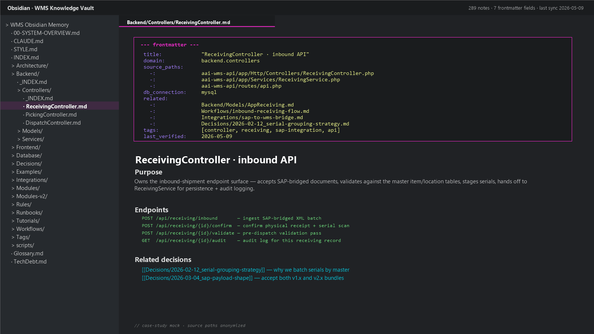

LLM-Friendly Wiki for an Enterprise WMS
A Karpathy-inspired Obsidian vault for human + AI context
A hand-maintained Obsidian wiki documenting a large enterprise WMS — built so that both a human engineer and an LLM coding agent can land on the same page and immediately know what file maps to what doc, what depends on what, what was decided, and when it was last verified. Inspired by Andrej Karpathy’s repeated point that the most useful artifact you can give an LLM is a high-quality, frontmatter-tagged wiki of your own code.
What it is
A separate Markdown vault that sits next to the WMS source tree
(aai-wms-api / aaiwms). Every page has YAML
frontmatter that names the source paths it documents
(aai-wms-api/app/Http/Controllers, aaiwms/pages),
the database connection it touches, related wiki pages, a tag list, and a
last_verified date. When a Claude Code or other AI agent opens
a session on the repo, the agent’s CLAUDE.md points it
at the wiki and tells it: edit a controller, update the matching wiki
page in the same turn, bump the timestamp.
Structure: ~20 top-level folders (Architecture, Backend, Database,
Decisions, Examples, Frontend, Integrations, Modules, Modules-v2, Rules,
Runbooks, Tags, Tutorials, Workflows, plus Glossary, STYLE,
Paths-and-Patterns, TechDebt). Every folder has an
_INDEX.md that lists its pages so a single grep gives you the
catalog without reading the full tree.
The bottleneck
The WMS is a real codebase — 251 Eloquent models, 103 controllers, 315 migrations on the API; 130 Vue pages on the web admin; 13 feature modules in the Flutter app. A human onboarding to a single module takes days, and an LLM agent asked to make a non-trivial change burns most of its context window just locating the right files. Specific pain:
- Onboarding a new dev (or a new agent session) starts with “where does X live?” — not “what should X do?”
- The same file is referenced by multiple controllers / multiple Vue views; tracing dependencies by reading code alone is slow.
- Migration history, design decisions, and runbook procedures live in Slack threads + commit messages — ephemeral, ungrepable, lost.
- When an AI agent asked “why is this column nullable?” the truthful answer was “a decision from six months ago that nobody remembers” — so the agent over-engineered around it.
- External integrations (SAP, YLEO, BBraun, BIPC, Epson) each have their own auth, payload shape, and quirks — rediscovering them per incident is expensive.
The ask: a single artifact, hand-maintained, that both humans and
LLM agents can read, with enough structure that an agent can
navigate it deterministically (frontmatter + _INDEX.md per
folder) and enough discipline that pages stay current (every edit to source
triggers a wiki update in the same commit).
How I broke it down
- Obsidian vault, not a static-site generator. Editing is plain Markdown in any editor; Obsidian gives the graph view + tags + backlinks for the human reader. No build step, no broken-link runtime.
- YAML frontmatter as the contract. Every page has
title,domain,source_paths[],db_connection,related[],tags[], andlast_verified. Agents are told to grep frontmatter first, body second — the structured fields answer 80% of routing questions. - Folder-per-_INDEX.md pattern. Each top-level folder
ships an
_INDEX.mdthat names every page in the folder with a one-line description. Grep the index, not the full file body. This cuts token cost dramatically on agent sessions. - Explicit source → wiki mapping in the
CLAUDE.mdof each source repo:app/Http/Controllers/*Controller.php → Backend/Controllers/,app/Models/*.php → Backend/Models/, etc. So the agent never has to guess where to write. - Same-turn updates as the rule. Every commit to source
must bump
last_verifiedon the matching wiki page in the same turn. Documented inSTYLE.md; enforced by review. - Decisions folder for the “why.” Architectural
decisions, schema choices, integration quirks all live as dated entries
in
Decisions/. When an agent finds an unusual choice in the code, the wiki has the receipt. - Runbooks for the “how.” Step-by-step
procedures (recover a stuck SAP batch, replay a failed dispatch, rebuild
the YLEO index) live in
Runbooks/— agent-readable in crisis, human-readable in calm. - Karpathy coding guidelines inside the
CLAUDE.md. The same guidance Karpathy publishes (think before coding, simplicity first, surgical changes, goal-driven execution) is mirrored into the project agent guide. Agents read it before touching anything.
What I built
Vault structure shipped:
00-SYSTEM-OVERVIEW.md— one-page architecture diagram, tech stack, key databases, external integrations. First file an agent reads.Architecture/— the higher-level pieces: multi-tenant model, queue topology, scheduler, auth strategy.Backend/with subfolders forControllers/,Models/,Services/,Jobs/,Observers/,Middleware/,Traits/— mirrors the Laravel app folder one-to-one.Frontend/withPages/,Components/,Store/— mirrors the Nuxt app.Database/— per-table docs: columns, indexes, FK relationships, migration history, gotchas.Modules/andModules-v2/— vertical slices (Receiving, Picking, Dispatch, Validator, Countsheet, Stock Movement, Audit Trail) with end-to-end flow per module.Workflows/— cross-cutting flows (a full picking cycle, a complete dispatch turnaround, SAP-to-WMS document ingestion).Integrations/— one page per external system (SAP, YLEO, BBraun, BIPC, Epson) with auth, payload shape, sample request/response, known quirks.Decisions/— dated ADRs explaining why a choice was made and what alternatives were rejected.Runbooks/— ops procedures for on-call.Tutorials/— opinionated how-to-add-a-new-module / how-to-add-a-new-table walkthroughs.Examples/— canonical code patterns extracted from the codebase, with frontmatter linking back to the source file.Rules/— permission rules, validation rules, RBAC matrix.Glossary.md,STYLE.md,Paths-and-Patterns.md,TechDebt.md,Tags/— cross-cutting reference.scripts/— small helper scripts (generate a fresh_INDEX.md, validate frontmatter, list pages with stalelast_verifieddates).
Example: the frontmatter shape every page follows — this is what makes the vault LLM-readable:
--- title: ReceivingController · inbound API domain: backend.controllers source_paths: - aai-wms-api/app/Http/Controllers/ReceivingController.php - aai-wms-api/app/Services/ReceivingService.php - aai-wms-api/routes/api.php db_connection: mysql related: - Backend/Models/AppReceiving.md - Workflows/inbound-receiving-flow.md - Integrations/sap-to-wms-bridge.md - Decisions/2026-02-12_serial-grouping-strategy.md tags: [controller, receiving, sap-integration, api] last_verified: 2026-05-09 --- # ReceivingController · inbound API ## Purpose Owns the inbound-shipment endpoint surface — accepts SAP-bridged documents, validates against the master item / location tables, stages serials …

Tech
- Format: Markdown with YAML frontmatter; Obsidian as the human editor; any text editor for ad-hoc updates.
- Conventions: Per-folder
_INDEX.md, fixed frontmatter schema,last_verifiedstamps, source → wiki mapping declared in each repo’sCLAUDE.md. - Integration with AI agents: The agent guide
(
CLAUDE.md) tells Claude Code / Cursor / Cline / etc. to grep_INDEX.mdfirst, frontmatter second, body last; to edit the matching wiki page in the same turn as the source; to bumplast_verifiedon every edit. - Quality scripts: small Bash / PHP scripts under
scripts/that list stale pages, validate frontmatter shape, regenerate_INDEX.mdfrom current folder contents. - Inspiration: Andrej Karpathy’s ongoing thesis that the most valuable artifact for AI-assisted coding is a well-structured wiki of your own code (not a chat history, not a vector database, not a prompt library — a wiki).
Results
Agent sessions that previously burned half their context window locating
the right file now read the relevant _INDEX.md + page
frontmatter and land on the right spot in seconds. New human team members
start with the 00-SYSTEM-OVERVIEW.md and a path through
Tutorials/ instead of guided tours. Architectural decisions
survive past Slack-thread amnesia; runbook procedures don’t need to
be reconstructed during incidents.
This case study is itself the philosophy — the wiki is the proof of work, not a metric on a chart.
What I’d do again — and differently
Worked well:
- Frontmatter discipline. Seven fields, every page, no exceptions. The schema is more important than the prose.
- _INDEX.md per folder. Cuts agent token cost dramatically vs. forcing the agent to enumerate folders.
- Same-turn-update rule. “Edit source, update wiki in the same commit” is the only rule that keeps a hand-maintained vault from rotting.
- Decisions folder. Capturing the “why” once, dated, has paid for itself many times when an agent asks about an unusual choice.
- Bundling Karpathy guidelines into the agent guide. Reduced the “LLM does too much” / “LLM over-refactors” failure mode meaningfully.
Would tighten:
- Lint frontmatter in CI. Currently
scripts/can flag bad frontmatter on demand — making it a pre-commit hook would close the drift window further. - Auto-stamp
last_verified. A small git hook that bumps the date on any wiki page touched in a commit would remove one manual step. - Cross-link audit. Some
related:entries now point at moved or renamed pages; a script to validate everyrelatedtarget exists would be cheap to write. - Per-page TTL. Some pages need re-verification quarterly
(integration auth flows), others survive years (architectural
overviews). A
verify_intervalfield in frontmatter would let a script flag the right pages at the right cadence.